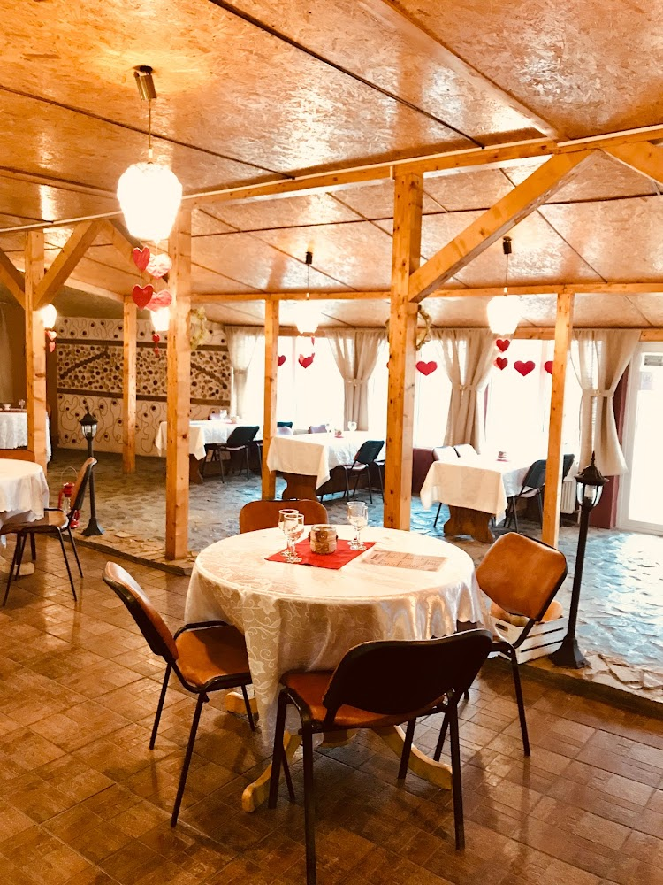
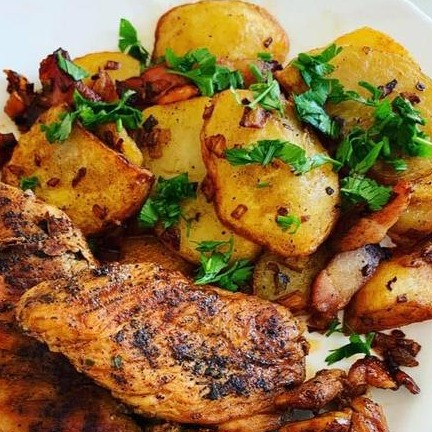
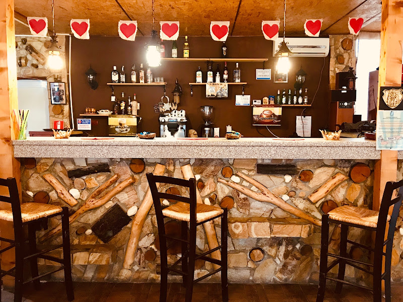
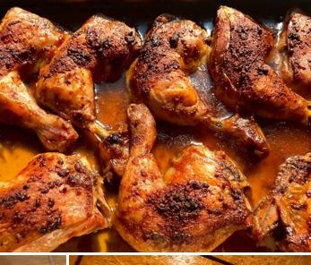
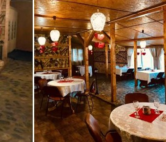
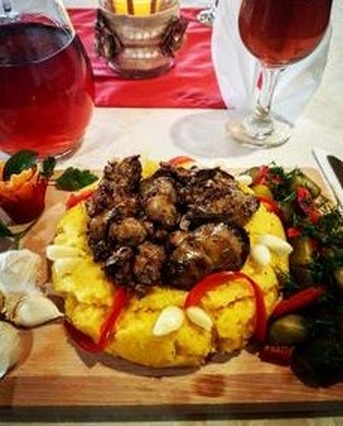
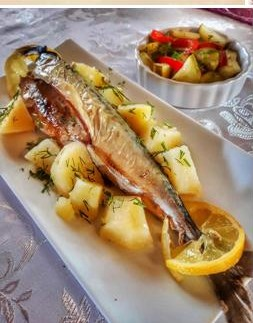
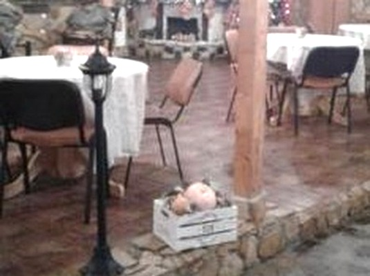
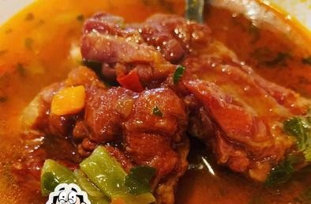
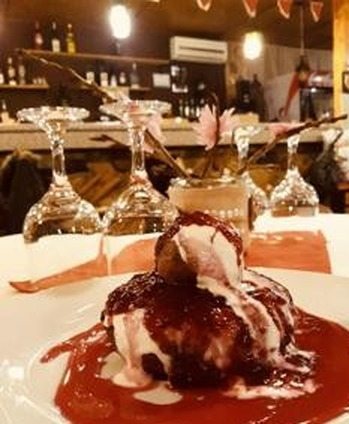

Bucătărie tradițională românească · Alexandria
Gustul de acasă, la Terasa Vedea.
O locație rustică și primitoare pe str. București, unde grătarul, mămăliga și preparatele tradiționale se gătesc ca la mama acasă. Iar mititeii? Cei mai buni din județ.
- 4,0 pe Google · 54 recenzii
- 120 locuri, din care 40 pe terasă
- ★★★★★ „cei mai buni mici din județ”
Povestea noastră
Un colț rustic de Românie, în inima Alexandriei.
Terasa Vedea este un restaurant cu personalitate — deschis din 2011 și recent renovat — unde te simți ca într-un han de altădată: lemn, piatră, lumină caldă și oameni primitori. Un loc intim, în mijlocul unui oraș agitat.
Aici bucătăria este tradițională românească: grătar la cărbuni, mămăligă cu brânză și smântână, ciorbe fierbinți, păstrăv proaspăt și deserturi de casă. Gătim din ingrediente bune și servim porții pe care le ții minte.
„O locație cu personalitate, intimă în mijlocul unui univers agitat. Și cei mai buni mici din județ.”
- Grătar la cărbuni
- Terasă cu 40 de locuri
- Parcare proprie
- Petreceri & evenimente

De ce Terasa Vedea
Mai mult decât o masă bună
Trei motive pentru care clienții revin — și îi aduc și pe ai lor.
Grătar & mici
Mititei, ceafă, pui și cârnați la cărbuni — grătarul de care se leagă multe seri bune. Recunoscut drept cel mai bun din județ.
Bucătărie de casă
Ciorbe fierbinți, mămăligă cu brânză, tocănițe și pește proaspăt — rețete tradiționale românești, gătite cu grijă în fiecare zi.
Petreceri & evenimente
120 de locuri și o terasă primitoare pentru botezuri, aniversări și mese în familie. Spune-ne ce sărbătorești și ne ocupăm noi.
Specialitățile casei
De la grătar la desert
O selecție din preparatele noastre tradiționale. Meniul complet, prețurile la zi și preparatul zilei le găsești în restaurant sau la telefon.
Galerie
O privire la noi în casă
Preparatele și atmosfera care te așteaptă la Terasa Vedea.

Grătar cu cartofi țărănești
Barul rustic
Pui la cuptor
Sala de mese
Grătar & mămăligă
Păstrăv la grătar
Lângă vatră
Tocăniță de casă
Desert de casăCe spun clienții
Recomandat cu drag
Câteva păreri reale, exact așa cum le-au lăsat oaspeții noștri.
„O locație intimă, cu personal foarte amabil și mâncare de nota 10+.”
„O locație cu personalitate! Intimă, în mijlocul unui univers agitat. Și, nu în ultimul rând, cei mai buni mici din județ!”
„Un restaurant excelent, am mâncat foarte bine și ne-am distrat de minune.”
Rating 4,0 pe Google, din 54 de recenzii · vezi mai multe pe Facebook.
Program & Locație
Ne găsești pe str. București, km 2
Program
Vă recomandăm o rezervare pentru grupuri și evenimente.
Rezervări & comenzi
Ai un eveniment de sărbătorit?
Botezuri, aniversări, mese în familie sau petreceri — 120 de locuri și o terasă primitoare. Spune-ne ce pui la cale și ne ocupăm noi de grătar și de restul.